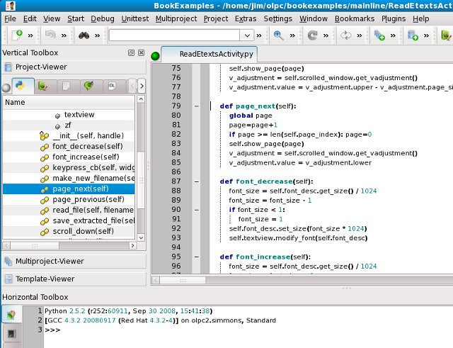
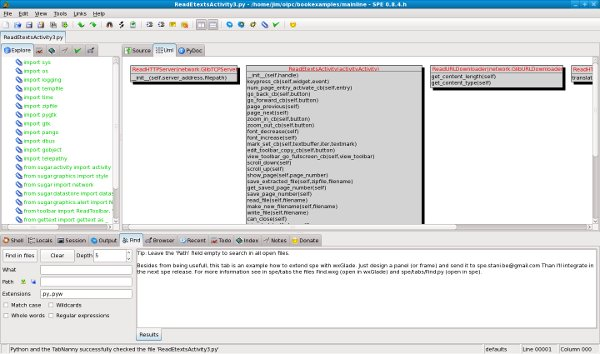
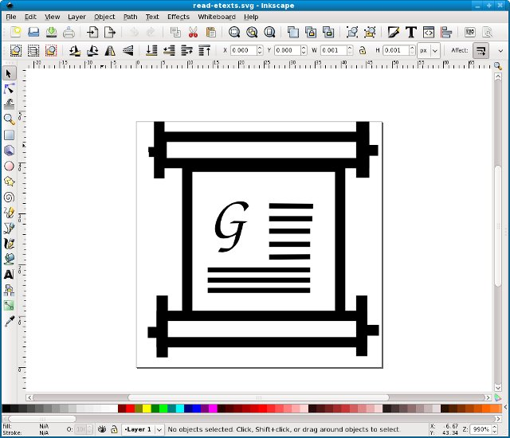
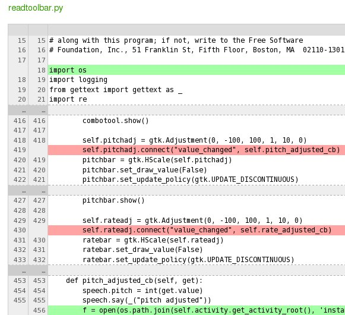
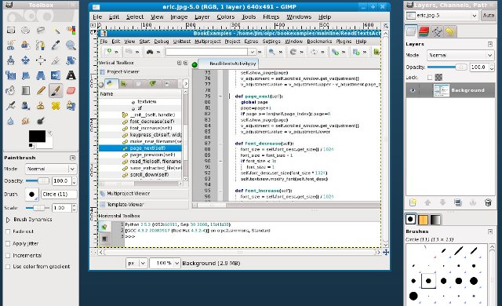
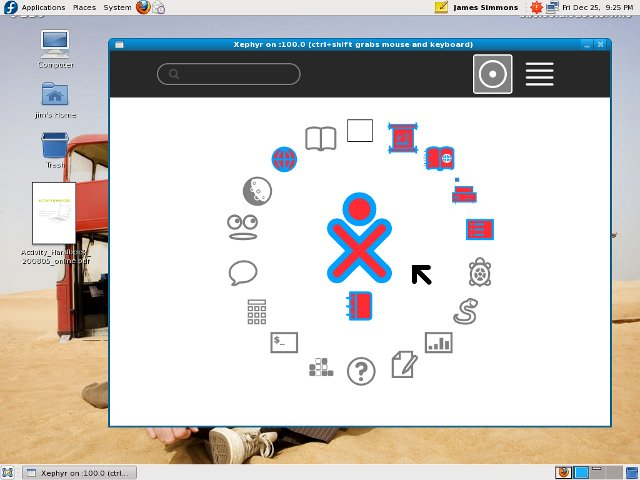

Setting Up a Sugar Development Environment
It is not currently practical to develop Activities for the XO on the XO. It's not so much that you can't do it, but that it's easier and more productive to do your development and testing on another machine running a more conventional OS. This gives you access to better tools and it also enables you to simulate collaboration between two computers running Sugar using only one computer.
Install Linux Or Use A Virtual Machine?
Even though Sugar runs on Linux it is possible to run a complete instance of Sugar in a virtual machine that runs on Windows. A virtual machine is a way to run one operating system on top of another one. The operating system being run is fooled into thinking it has the whole computer to itself. (Computer industry pundits will tell you that using virtual machines is the newest new thing out there. Old timers like me know that IBM was doing it on their mainframe computers back in the 1970's).
For awhile this was actually the recommended way to develop Activities. The version of Linux that Sugar used was different enough from regular Linux distributions that even Linux users were running Sugar in a virtual machine on top of Linux.
The situation has improved, and most current Linux distributions have a usable Sugar environment.
If you're used to Windows you might think that running Sugar in a VM from Windows instead of installing Linux might be the easier option. In practice it is not. Linux running in a VM is still Linux, so you're still going to have to learn some things about Linux to do Activity development. Also, running a second OS in a VM requires a really powerful machine with gigabytes of memory. On the other hand, I do my Sugar development using Linux on an IBM NetVista Pentium IV I bought used for a little over a hundred dollars, shipping included. It is more than adequate.
Installing Linux is not the test of manhood it once was. Anyone can do it. The GNOME desktop provided with Linux is very much like Windows so you'll feel right at home using it.
When you install Linux you have the option to do a dual boot, running Linux and Windows on the same computer (but not at the same time). This means you set aside a disk partition for use by Linux and when you start the computer a menu appears asking which OS you want to start up. The Linux install will even create the partition for you, and a couple of gigabytes is more than enough disk space. Sharing a computer with a Linux installation will not affect your Windows installation at all.
Sugar Labs has been working to get Sugar included with all Linux distributions. If you already have a favorite distribution, chances are the latest version of it includes Sugar. Fedora, openSuse, Debian, and Ubuntu all include Sugar. If you already use Linux, see if Sugar is included in your distribution. If not, Fedora is what is used by the XO computer so Fedora 10 or later might be your best bet. You can download the Fedora install CD or DVD here: https://fedoraproject.org/get-fedora.
It is worth pointing out that all of the other tools I'm recommending are included in every Linux distribution, and they can be installed with no more effort than checking a check box. The same tools often will run on Windows, but installing them there is more work than you would expect for Windows programs.
If you are unwilling to install and learn about Linux but still want to develop Activities one option you have is to develop a standalone Python program that uses PyGame of PyGTK and make it do what you'd like your Activity to do. You could then turn over your program to someone else who could convert it into a Sugar Activity. You could develop such a Python program on Windows or on the Macintosh.
If you want to do development on a Macintosh running Sugar in a virtual machine may be a more attractive option. If you want to try it details will be found here: http://wiki.laptop.org/go/Developers/Setup. It may also be possible to install Fedora Linux on an Intel or Power PC Macintosh as a dual boot, just like you can do with Windows. Check the Fedora website for details.
Another option for Mac users is to use Sugar on a Stick as a test environment. You can learn about that here: http://wiki.sugarlabs.org/go/Sugar_on_a_Stick.
What About Using sugar-jhbuild?
Sugar-jhbuild is a script that downloads the source code for the latest version of all the Sugar modules and compiles it into a subdirectory of your home directory. It doesn't actually install Sugar on your system. Instead, you run it out of the directory you installed it in. Because of the way it is built and run it doesn't interfere with the modules that make up your normal desktop. If you are developing Sugar itself, or if you are developing Activities that depend on the very latest Sugar features you'll need to run sugar-jhbuild.
Running this script is a bit more difficult than just installing the Sugar packages that come with the distribution. You'll need to install Git and Subversion, run a Git command from the terminal to download the sugar-jhbuild script, then run the script with several different options which download more code, ask you to install more packages, and ultimately compile everything. It may take you a couple of hours to do all the steps. When you're done you'll have an up to date test environment that you can run as an alternative to sugar-emulator. There is no need to uninstall sugar-emulator; both can coexist.
You run it with these commands:
cd sugar-jhbuild ./sugar-jhbuild run sugar-emulator
Should you consider using it? The short answer is no. A longer answer is probably not yet.
If you want your Activities to reach the widest possible audience you don't want the latest Sugar. In fact, if you want a test environment that mimics what is on most XO computers right now you need to use Fedora 10. Because updating operating systems in the field can be a major undertaking for a school most XO's will be running Sugar .82 or older for quite some time.
Of course it is also important to have developers that want to push the boundaries of what Sugar can do. If after developing some Activities you decide you need to be one of them you can learn about running sugar-jhbuild here: http://wiki.sugarlabs.org/go/DevelopmentTeam/Jhbuild.
Strictly speaking sugar-jhbuild is just the script that downloads and compiles Sugar. If you wanted to be correct you would say "Run the copy of sugar-emulator you made with sugar-jhbuild". Most Sugar developers would just say "Run sugar-jhbuild" and that's what I'll say in this book.
Python
We'll be doing all the code samples in Python so you'll need to have Python installed. Python comes with every Linux distribution. You can download installers for Windows and the Macintosh at http://www.python.org/.
Eric
Developers today expect their languages to be supported by an Integrated Development Environment and Python is no exception. An IDE helps to organize your work and provides text editing and a built in set of programming and debugging tools.

There are two Python IDE's I have tried: Eric and Idle. Eric is the fancier of the two and I recommend it. Every Linux distribution should include it. It looks like it might work on Windows too. You can learn more about it at the Eric website: http://eric-ide.python-projects.org/.
SPE (Stani's Python Editor)
This is an IDE I discovered while writing this book. It comes with Fedora and in addition to being a Python editor it will make UML diagrams of your code and show PyDoc for it. Here is SPE showing a UML diagram for one of the Activities in this book:

If you're an experienced developer you might find this a useful alternative to Eric. If you're just starting out Eric should meet your needs pretty well.
Other IDE's
There is also a commercial Python IDE called Wingware, which has a version you can use for free. You can learn more about it at http://www.wingware.com/.
Inkscape
Inkscape is a tool for creating images in SVG format. Sugar uses SVG for Activity icons and other kinds of artwork. The “XO” icon that represents each child in the Neighborhood view is an SVG file that can be modified.

Inkscape comes with every Linux distribution, and can be installed on Windows as well. You can learn more about it here: http://www.inkscape.org/.
Git
Git is a version control system. It stores versions of your program code in a way that makes them easy to get back. Whenever you make changes to your code you ask Git to store your code in its repository. If you need to look at an old version of that code later you can. Even better, if some problem shows up in your code you can compare your latest code to an old, working version and see exactly what lines you changed.

If there are two people working on the same program independently a version control system will merge their changes together automatically.
Suppose you're working on a major new version of your Activity when someone finds a really embarrassing bug in the version you just released. If you use Git you don't need to tell people to live with it until the next release, which could be months away. Instead you can create a branch of the previous version and work on it alongside the version you're enhancing. In effect Git treats the old version you're fixing and the version you're improving as two separate projects.
You can learn more about Git at the Git website: http://git-scm.com/.
When you're ready for a Git repository for your project you can set one up here: http://git.sugarlabs.org/. I will have more to say about setting up and using a Git repository later in this book.
There is a Git repository containing all the code examples from this book. Once you have Git installed you can copy the repository to your computer with this command:
git clone git://git.sugarlabs.org/myo-sugar-activities-examples/mainline.git
The GIMP
The GIMP is one of the most useful and badly named programs ever developed. You can think of it as a free version of Adobe Photoshop. If you need to work with image files (other than SVG's) you need this program.

You may never need this program to develop the Activity itself, but when it's time to distribute the Activity you'll use it to create screen shots of your Activity in action. Nothing sells an Activity to a potential user like good screen shots.
Sugar Emulation
Most Linux distributions should have Sugar included. In Fedora you can run Sugar as an alternative desktop environment. When you log in to GDM Sugar appears as a desktop selection alongside GNOME, KDE, Window Maker, and any other window managers you have installed.
This is not the normal way to use Sugar for testing. The normal way uses a tool called Xephyr to run a Sugar environment in a window on your desktop. In effect, Xephyr runs an X session inside a window and Sugar runs in that. You can easily take screen shots of Sugar in action, stop and restart Sugar sessions without restarting the computer, and run multiple copies of Sugar to test collaboration.

I'll have more to say about this when it's time to test your first Activity.
Author : SetUpDevEnvironment
© Anne Gentle 2009
Modifications:
James Simmons 2009, 2010
Lachlan Musicman 2010
License : General Public License
Produced in FLOSS Manuals (http://www.flossmanuals.net)